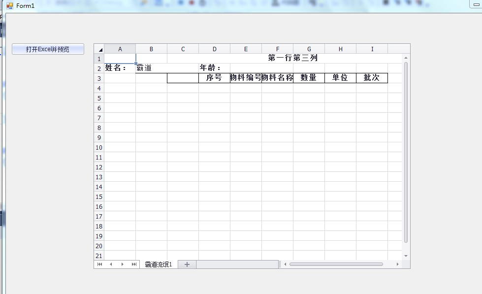
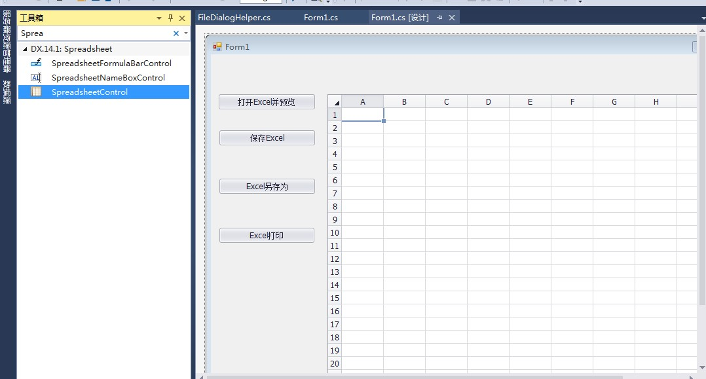
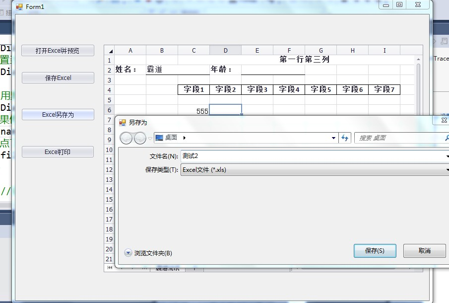
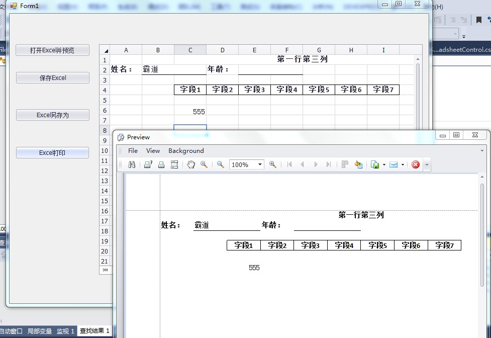

Winform控件-DevExpress18下载安装注册以及在VS中使用：
https://blog.csdn.net/BADAO_LIUMANG_QIZHI/article/details/100061243
参照以上将DevExpress安装并引进到工具箱。
这里使用的是VS2013所以安装的DevExpress是14版本。
https://download.csdn.net/download/badao_liumang_qizhi/11608734

新建Winform程序，拖拽一个SpreadsheetControl，以及一个Button按钮。

然后双击进入打开以及预览按钮的点击事件中
private void simpleButton1_Click(object sender, EventArgs e)
{
string filePath = FileDialogHelper.OpenExcel();
if (!string.IsNullOrEmpty(filePath))
{
IWorkbook workbook = spreadsheetControl1.Document;
workbook.LoadDocument(filePath);
}
}
其中打开文件的路径是有工具类FileDialogHelper中的OpenEecel方法返回的。
新建FileDialogHelper类，类中新建方法实现打开一个选择文件对话框并将文件路径返回。
public static string OpenExcel()
{
OpenFileDialog fileDialog = new OpenFileDialog();
fileDialog.Multiselect = true;
fileDialog.Title = "请选择文件";
fileDialog.Filter = "所有文件(*xls*)|*.xls*"; //设置要选择的文件的类型
if (fileDialog.ShowDialog() == DialogResult.OK)
{
return fileDialog.FileName;//返回文件的完整路径
}
else
{
return null;
}
}
拖拽一个按钮，双击进入其点击事件中。
在上面预览窗口中双击单元格对excel进行编辑后点击保存会将源文件进行保存。
private void simpleButton2_Click(object sender, EventArgs e)
{
spreadsheetControl1.SaveDocument();
}
拖拽一个按钮，然后双击进入其点击事件中
private void simpleButton3_Click(object sender, EventArgs e)
{
//获取要保存的文件路径
string filePath = FileDialogHelper.SaveExcel();
//如果不为空
if (!string.IsNullOrEmpty(filePath))
{
try
{
//获取预览的excel对象 Document提供对控件中加载的工作簿的访问
IWorkbook workbook = spreadsheetControl1.Document;
//根据选择的路径保存excel
workbook.SaveDocument(filePath);
//弹窗提示
MessageBox.Show("保存成功");
}
catch (Exception ex)
{
MessageBox.Show(ex.Message);
}
}
}
同理使用工具类弹窗选择保存路径，然后调用Saveocument(path)进行保存另存为。
SaveExcel方法代码
public static string SaveExcel()
{
string filename = "霸道";
SaveFileDialog saveDialog = new SaveFileDialog();
//设置默认文件扩展名。
saveDialog.DefaultExt = "xls";
//设置当前文件名筛选器字符串，该字符串决定对话框的“另存为文件类型”或“文件类型”框中出现的选择内容。
saveDialog.Filter = "Excel文件|*.xls";
// 用默认的所有者运行通用对话框。
saveDialog.ShowDialog();
//如果修改了文件名，用对话框中的文件名名重新赋值
filename = saveDialog.FileName;
//被点了取消
if (filename.IndexOf(":") < 0) return null;
else
{
//获取文件对话框中选定的文件名的字符串
return saveDialog.FileName.ToString();
}
}

拖拽一个按钮，然后双击进入其点击事件中。
private void simpleButton4_Click(object sender, EventArgs e)
{
this.spreadsheetControl1.ShowPrintPreview();
}

https://download.csdn.net/download/badao_liumang_qizhi/11618624